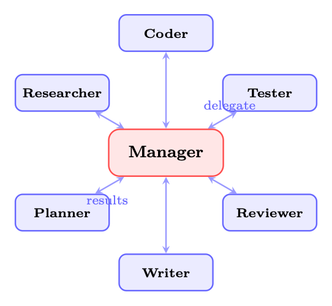
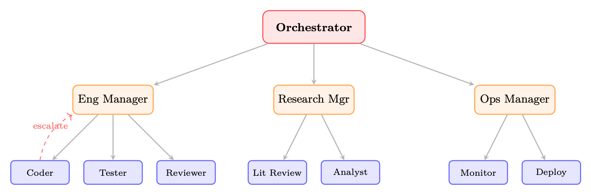

动机：为什么需要多个智能体
本节聚焦“动机：为什么需要多个智能体”的定义、机制与工程含义。
能够感知状态、规划行动、调用工具并迭代完成任务的系统单元。
在状态下选择动作或生成 token 的概率分布。
模型在部署或测试时生成输出的过程。
动机：为什么需要多个智能体？
从很多方面来说，人工智能的历史都是一部规模化的历史。早期的人工智能系统是 整体式：单个程序、单个知识库、单个推理引擎。作为问题 随着情况变得越来越复杂，研究人员发现，没有任何一个单独的智能体——无论其能力如何——能够有效地 处理丰富的、开放式任务的各个方面。这种见解在分布式人工智能中早已确立 和多智能体系统 (MAS) 研究 [380, 381]，在大数据时代发现了新的紧迫性 语言模型。
核心直觉 一个LLM，无论规模有多大，都是通才。专业的LLM团队，每个人都专注于 一个狭窄的子问题并传达他们的结果，可以在复杂的问题上胜过通才， 多方面的任务——就像一个由人类专家组成的团队在某项任务上胜过单个通才一样 复杂的工程项目。
四个基本动机推动了从整体智能体向智能体社会的转变：
专业化。 不同的子任务受益于不同的能力、提示策略和 甚至不同的基础模型。代码生成智能体可以在编程语料库上进行微调；一个 事实核查智能体可以通过检索工具进行接地；可以提示创意写作智能体 为了风格的多样性。强迫单个智能体同时在所有这些方面表现出色都是低效的 而且往往是不可能的。
并行性。 许多现实世界的任务分解为可以执行的独立子任务 同时。需要文献回顾、数据分析和报告撰写的研究流程 可以并行运行所有三个，从而大大减少挂钟时间。顺序单智能体处理 是多智能体并行性消除的瓶颈。
鲁棒性。 单个智能体是单点故障。如果它产生幻觉，陷入循环，或者 产生一个微妙的错误答案，没有检查。多智能体系统引入冗余： 第二个智能体可以验证、批评或独立地重新得出结果。敌对智能体可以探测 在输出被信任之前的弱点。
新兴能力。 也许最有趣的是，智能体集体可以展示能力 没有任何个人智能体拥有。通过辩论、协商和迭代完善，多方 智能体系统可以得出超越任何单个智能体单独产生的解决方案—— 社会有机体的新兴智能的计算模拟。
历史背景 多智能体系统研究可以追溯到 20 世纪 80 年代，其基础工作是分布式问题 解决[382]、合同网络协议[374]和FIPA智能体通信标准[3]。 向基于LLM的智能体的转变以新的基础重新激活了这些经典思想：而不是
多智能体架构
本节聚焦“多智能体架构”的定义、机制与工程含义。
能够感知状态、规划行动、调用工具并迭代完成任务的系统单元。
语言模型处理文本的基本离散单位。
模型在部署或测试时生成输出的过程。
通过裁剪目标限制策略更新幅度的强化学习算法。
具有token推理的手工编码智能体，我们现在拥有的智能体的“认知”来自于 学习神经表征。核心架构模式——层次结构、市场、黑板、 消息传递——仍然非常重要。
从整体智能体到智能体社会的转变反映了复杂的更广泛的模式 系统：随着问题空间的增长，分布式模块化架构始终表现出色 集中的、单一的。问题不再是是否使用多个智能体，而是如何使用 组织他们。
多智能体系统的拓扑——智能体如何连接以及权限如何在智能体之间流动 它们——是最重要的架构决策。出现了四种规范模式，每种模式 具有明显的权衡。
集中式（主管/经理）架构
在集中式架构中，单个协调器智能体（各种称为主管、经理或 planner）保存全局状态，分解任务，将子任务委托给工作智能体，并聚合 他们的结果。该拓扑是中心辐射型：所有通信都流经中心节点。
图 24.1：集中式（Supervisor）架构。经理将任务委派给专门的工人， 汇总他们的产出。所有通信都通过中央枢纽进行。
经理的职责包括：
• 任务路由：决定哪个工作人员最适合每个子任务
• 上下文管理：为每个工作人员提供全局上下文的相关子集
• 结果聚合：将工人的输出合成一个连贯的整体
• 错误处理：检测工作器故障并重新路由或重试

LangGraph 中的主管模式
from
langgraph.graph
import
StateGraph , START , END
from
typing
import
TypedDict , Literalclass
TeamState(TypedDict):
task: str
plan: str
code: str
tests: str
review: str
next_agent: str
final_output: strdef
supervisor_node (state: TeamState) -> TeamState:
"""Central
orchestrator: decides
which
agent to invoke
next."""
messages = [{"role": "system", "content": SUPERVISOR_PROMPT },
{"role": "user",
"content": f"Task: {state[’task ’]}\n"f"Plan: {state.get(’plan ’,’’)}\n"
f"Code: {state.get(’code ’,’’)}\n"
f"Tests: {state.get(’tests ’,’’)}\n"
"Which
agent
should act next? "
"Options: planner , coder , tester ,
reviewer , FINISH"}]
response = llm.invoke(messages)
return {** state , "next_agent": response.content.strip ()}def route(state: TeamState) -> Literal["planner","coder","tester","reviewer","__end__"]:
return
state["next_agent"] if state["next_agent"] != "FINISH" else ENDbuilder = StateGraph(TeamState)
builder.add_node("supervisor", supervisor_node )
builder.add_node("planner",
planner_node )
builder.add_node("coder",
coder_node)
builder.add_node("tester",
tester_node)
builder.add_node("reviewer",
reviewer_node )builder.add_edge(START , "supervisor")
builder. add_conditional_edges ("supervisor", route)
for agent in ["planner", "coder", "tester", "reviewer"]:builder.add_edge(agent , "supervisor")
# always
return to supervisorgraph = builder.compile ()集中式架构权衡 优点：控制流程简单；明确的责任；易于调试（所有决策都集中在一处）； 易于实施。
缺点：单点故障——如果经理产生幻觉或感到困惑，整个系统 失败；高负载下管理者成为瓶颈；管理器的上下文窗口必须 保持全局状态，限制可扩展性。
去中心化（点对点）架构
在去中心化架构中，智能体之间直接交互，无需中央协调器。 拓扑是一个网格：任何智能体都可以与任何其他智能体进行通信。协调产生于 局部互动而非全局规划。 对等系统中的紧急协调是通过以下机制产生的：
图 24.2：去中心化（点对点）架构。智能体商直接沟通；协调出现 来自当地的互动。
• 谈判：智能体竞标任务或资源
• Stigmergy：智能体修改其他人观察到的共享状态（参见第 24.3.6 节）
• Gossip 协议：智能体通过网络传播信息
• 局部共识：小团体在没有全球协调的情况下达成一致
去中心化架构的权衡 优点：能够抵御单个智能体故障；随着智能体的添加而自然扩展；无瓶颈。
缺点：难以调试——突发行为难以追踪；智能体时可能发生冲突 对国家的看法不一致；协调开销随着简单消息传递的 O(n2) 增长； 难以保证全局一致性。
层次结构
分层架构将集中式模式概括为具有多个的树结构 管理水平。顶级协调者委派给特定于域的子经理，他们在 把委托交给专门的工人。这反映了大企业的组织结构。 分层系统的主要特征：
• 授权链：权限和上下文沿着树向下流动；结果向上流动
• 升级路径：员工可以将无法解决的问题升级给经理
• 领域隔离：子级管理者维护特定领域的上下文，减少认知 加载到顶级协调器上
• 范围限制：每个智能体只需了解其直接上级和下级即可 内茨

图 24.3：分层架构。顶级协调者委派给域子经理，他们 委托给专门的工作人员。虚线箭头显示升级路径。
企业的比喻是恰当的：首席执行官（最高协调者）制定战略； VP（副经理） 将战略转化为领域计划；个人贡献者（工人）执行。等级制度 在保持问责制的同时实现规模化。
群体架构
群体架构受到生物系统（蚁群、鸟群）的启发，由许多 松散耦合的智能体遵循简单的局部规则，产生复杂的全局行为，而无需 任何中央协调员或全球国家。 OpenAI 的 Swarm 框架 [336]（现已被 OpenAI Agents SDK 取代，但其概念 原语仍然有影响力）用两个原语来操作它：
• 例程：智能体完成子任务所遵循的指令序列
• 切换：一个智能体将控制权（和相关上下文）转移给另一个智能体
OpenAI Swarm：例程和切换
from
swarm
import Swarm , Agentclient = Swarm ()def
transfer_to_billing ():
"""Handoff: transfer
control to the
billing
specialist."""
return
billing_agentdef
transfer_to_technical ():
"""Handoff: transfer
control to the
technical
support
agent."""
return
technical_agenttriage_agent = Agent(name="Triage
Agent",
instructions="""You are a customer
service
triage
agent.
Determine
the nature of the
customer ’s issue:
- For
billing
questions , transfer to billing.
- For
technical
issues , transfer to technical
support.
- For
general
questions , answer
directly.""",
functions =[ transfer_to_billing , transfer_to_technical ],
)billing_agent = Agent(name="Billing
Specialist",
instructions="You handle
billing
inquiries. "
"Access
account
data and
resolve
payment
issues.",
functions =[ lookup_account , process_refund ],
)technical_agent = Agent(
协调机制
本节聚焦“协调机制”的定义、机制与工程含义。
能够感知状态、规划行动、调用工具并迭代完成任务的系统单元。
通过裁剪目标限制策略更新幅度的强化学习算法。
name="Technical
Support",
instructions="You
resolve
technical
issues. "
"Diagnose
problems
and
provide step -by -step
solutions.",
functions =[ run_diagnostics , escalate_to_engineering ],
)# No global
state
--- each
agent
operates on its local
context
response = client.run(agent=triage_agent ,
messages =[{"role": "user", "content": "My invoice is wrong"}]
)群体属性
• 无全局状态：每个智能体仅维护其本地上下文窗口
• 本地决策：路由决策由当前智能体做出，而不是中央规划者
• 通过集体行为完成任务：复杂的任务通过集体行为完成 交接链，每个智能体贡献其专业
• 轻量级：无编排开销；智能体在切换之间是无状态的
智能体如何协调——如何共享信息、分工和解决冲突——就像 与拓扑一样重要。六种规范协调机制适用于基于 LLM 的多智能体 系统。
共享状态（全局黑板）
黑板架构[321]提供了一个所有智能体都可以读取的共享数据结构 并写信至。在 LLM 系统中，这通常作为共享字典、数据库或 结构化文档。
import
threading
from
dataclasses
import
dataclass , field
from
typing
import Any , Callable , Dict , List@dataclass
class
BlackboardEntry :
value: Any
author: str
timestamp: float
confidence: float = 1.0class
Blackboard:
"""Thread -safe
shared
state for multi -agent
coordination."""def
__init__(self):
self._data: Dict[str , BlackboardEntry ] = {}
self._lock = threading.RLock ()
self._subscribers: Dict[str , List[Callable ]] = {}def write(self , key: str , value: Any , author: str ,confidence: float = 1.0) -> bool:
"""Write to blackboard; higher -confidence
entries
win
conflicts."""
with self._lock:existing = self._data.get(key)
if existing
and
existing.confidence > confidence:
return
False
# Conflict: existing
entry
wins
import
timeself._data[key] = BlackboardEntry (value=value , author=author ,
timestamp=time.time (), confidence=confidence
)
self._notify(key , value)
return
Truedef read(self , key: str) -> Any:with self._lock:entry = self._data.get(key)
return
entry.value if entry
else Nonedef
subscribe(self , key: str , callback: Callable):
"""Agents
subscribe to changes on specific
keys."""
self._subscribers.setdefault(key , []).append(callback)def
_notify(self , key: str , value: Any):
for cb in self._subscribers .get(key , []):cb(key , value)清单 24.1：具有冲突解决功能的共享黑板
消息传递
消息传递是LLM智能体最自然的协调机制：智能体进行通信 通过相互发送结构化文本消息。关键设计决策包括：
• 消息格式：结构化（JSON 模式）与自然语言与混合语言
• 路由：直接（智能体到智能体）与广播与基于主题的发布/订阅
• 对话线程：维护多轮交换的上下文
• 确认：发件人是否要求确认接收/处理
规划与分解
管理器智能体将高级任务分解为子任务的有向无环图（DAG）， 将每个任务分配给适当的工作人员，并跟踪依赖关系。这是多智能体的模拟 经典的分层任务网络（HTN）规划。
from
dataclasses
import
dataclass , field
from
typing
import List , Optional
import
asyncio@dataclass
class
Task:
id: str
description: str
assigned_to: str
dependencies: List[str] = field( default_factory =list)
status: str = "pending"
# pending | running | done | failed
result: Optional[str] = Noneclass
TaskDAG:
def
__init__(self):
self.tasks: dict[str , Task] = {}def
add_task(self , task: Task):
self.tasks[task.id] = taskdef
ready_tasks(self) -> List[Task ]:
"""Return
tasks
whose
dependencies
are all
completed."""返回 [
t for t in self.tasks.values ()
if t.status == "pending"
and all(self.tasks[d]. status == "done"for d in t.dependencies )
]async def
execute(self , agent_pool: dict):
while any(t.status != "done" for t in self.tasks.values ()):ready = self.ready_tasks ()
if not ready:await
asyncio.sleep (0.1)
continue
# Execute
ready
tasks in parallel
await
asyncio.gather (*[
self._run_task(t, agent_pool[t.assigned_to ])
for t in ready
])async def
_run_task(self , task: Task , agent):
task.status = "running"
try:task.result = await
agent.execute(task.description)
task.status = "done"
except
Exception as e:
task.status = "failed"
raise清单 24.2：任务 DAG 分解
投票与共识
当多个智能体产生相互冲突的输出时，投票机制会将他们的响应汇总为 一个单一的决定。常见的方案包括：
• 多数投票：最常见的答案获胜；对于事实性问题有效
• 加权投票：具有较高业绩记录或置信度得分的智能体获得更多权重
• 基于辩论的解决方案：智能体为自己的立场进行辩论；法官智能体决定
• 德尔菲法：迭代轮次，智能体在看到其他人的答案后修改他们的答案
形式上，给定 n 个智能体，产生输出 {o1,...。。 , on}，权重为 {w1, .。。 , wn}, 加权 共识是：
n X
o*= arg 最大值 哦
i=1
wi · 1[oi = o]
(24.1)对于连续输出（例如概率估计），加权平均适用：
^p =PN
i=1 wi · piPN 我=1维 (24.2)
基于市场的协调
市场机制通过拍卖、招标的方式配置任务和资源。合同网 协议[374]是最古老的多智能体协调机制之一，是一种任务拍卖：
1. 经理广播任务公告并提出要求
2. 承包商智能体提交标书（能力声明+成本估算）
通信协议
本节聚焦“通信协议”的定义、机制与工程含义。
能够感知状态、规划行动、调用工具并迭代完成任务的系统单元。
3. 经理将合同授予最佳投标人
4. 中标承包商执行并报告结果
在LLM系统中，出价可以用自然语言表达（“我可以通过3步完成这个 具有高置信度”）或结构化格式。市场机制对于以下方面特别有效 资源受限的设置，其中 API 成本必须最小化。
Stigmergy：通过环境进行间接交流
臭味[? ] 用更简单的机制取代显式的智能体到智能体消息传递：每个智能体 修改共享环境作为其工作的副作用，其他智能体对此做出反应 修改而不是直接信号。经典的插图是一只觅食的蚂蚁沉积 返回路径上的信息素；随后的蚂蚁会放大成功的路线，而无需任何蚂蚁“说话” 到另一个。 在LLM多智能体系统中，污蔑表现为：
• 共享文档：智能体写入共享文档；其他人阅读并在此基础上进行构建
• 代码存储库：一名智能体提交代码；另一个读取并扩展它
• 注释层：智能体注释共享工件（突出显示错误、添加注释）
• 任务队列：智能体从共享队列添加和使用任务
Stigmergy 无需显式通信开销即可实现协调——智能体只需观察 共享环境的状态并采取相应的行动。
通讯协议
有效的多智能体系统需要明确定义的通信协议：商定的格式、 智能体到智能体消息的语义和模式。 （有关标准化智能体间协议，请参见 第23章。）
结构化消息格式
LLM 智能体之间的消息应结构化以实现可靠的解析和路由。最小的 消息架构：
from
pydantic
import
BaseModel , Field
from
typing
import
Literal , Optional , Dict , Any
from
datetime
import
datetime , timezone
import
uuidPerformativeType = Literal["inform",
# Share
information
"request",
# Request an action
"propose",
# Propose a course of action
"accept",
# Accept a proposal
"reject",
# Reject a proposal
"query",
# Ask a question
"confirm",
# Confirm
receipt/completion
"failure",
# Report a failure
]class
AgentMessage(BaseModel):
message_id: str = Field( default_factory =lambda: str(uuid.uuid4 ()))
conversation_id : str
# Groups
related
messages
sender: str
# Agent
identifier
receiver: str
# Target
agent (or "broadcast ")角色设计与专业化
本节聚焦“角色设计与专业化”的定义、机制与工程含义。
能够感知状态、规划行动、调用工具并迭代完成任务的系统单元。
在状态下选择动作或生成 token 的概率分布。
模型在部署或测试时生成输出的过程。
performative: PerformativeType
content: str
# Natural
language
content
metadata: Dict[str , Any] = {} # Structured
payload
reply_to: Optional[str] = None
# message_id
being
replied to
timestamp: datetime = Field( default_factory =lambda: datetime.now(timezone.utc)
)def
to_llm_prompt(self) -> str:
"""Render
message as a prompt
fragment
for the
receiving
agent."""
return (f"[MESSAGE
from {self.sender }]\n"
f"Type: {self.performative }\n"
f"Content: {self.content }\n"
+ (f"Metadata: {self.metadata }\n" if self.metadata
else "")
)清单 24.3：智能体消息模式
表演类型（FIPA-ACL 启发）
借鉴 FIPA 智能体通信语言 [3]，针对 LLM 智能体进行了现代化改造：
表 24.1：LLM 智能体消息的 FIPA-ACL 启发执行类型。
述行性 语义学 使用示例
通知 发件人相信 phi 为真 分享研究成果 请求 发送者希望接收者做α 委派子任务 提议 发送者提出计划π 提出一种方法 接受 接管人同意提议 确认任务分配 拒绝 接管人拒绝提议 拒绝不相容的任务 查询 发件人想知道 phi 要求澄清 确认 发件人确认 phi 发生 确认完成 失败 发送方未能达到α 报告错误
上下文共享策略
多智能体通信中的一个关键挑战是上下文管理：有多少历史记录 每个智能体需要吗？三种策略：
• 完整历史记录：将整个对话历史记录传递给每个座席。信息量最大但 昂贵；上下文窗口很快就填满了。
• 摘要：摘要生成器智能体将先前的交流压缩为紧凑的摘要。高效 但有损；重要的细节可能会被删除。
• 相关摘录：使用语义搜索仅检索最相关的先前消息。 平衡成本和信息量；需要一个检索机制。
上下文共享经验法则
使用完整的历史记录进行简短对话（<10 轮）；中等长度对话的摘要； 长时间运行的智能体会话的检索增强摘录。始终包含最新的 k 逐字传递消息以保留即时上下文。
角色设计和专业化
智能体角色的设计——他们的能力、角色和职责——既是一门艺术，也是一门艺术。 一门科学。精心设计的角色可以实现专业化；角色设计不当会造成混乱 冗余。
定义智能体角色
LLM多智能体系统中的常见角色：
表 24.2：LLM 多智能体系统中的常见智能体角色。
角色 主要能力 典型工具
研究员 信息收集、综合 姐姐 网络搜索、RAG、数据库
规划师 任务分解、调度 英 无（仅推理）
编码员 代码生成、调试 代码解释器、linter 审稿人 质量评估、批评 无（仅推理） 测试员 测试生成、执行 测试运行器、覆盖率工具 作家 散文生成、编辑 语法检查器、风格指南 批评家 对抗性评估 无（仅推理） 协调者 协调、授权 所有智能体接口
基于能力与基于角色的分配
任务分配的两种理念：
• 基于角色：根据预定义的角色标签分配任务。简单且可预测；可能 当任务跨越多个角色时，效果并不理想。
• 基于能力：根据对每个座席能力的动态评估来分配任务 与任务要求相关的联系。更灵活；需要能力注册和匹配 机制。
动态角色重新分配
在长时间运行的系统中，静态角色分配变得不是最优的。动态重新分配允许 智能体将根据以下条件承担新角色：
• 当前工作负载（负载平衡）
• 在近期任务中表现出色
• 改变任务要求
• 需要覆盖的智能体故障
思想多样性的角色设计
一种微妙但强大的技术：为智能体提供独特的角色，鼓励不同的观点。 设计不是五个相同的“助理”智能体，而是：
• 强调机会的乐观主义者
• 质疑假设的怀疑论者
• 注重实施的实用主义者
• 具有长远眼光的远见卓识者
• 持有相反立场的唱反调者
这种思想的多样性，受到六顶思考帽[383]等技术的启发，减少了群体思维 并产生更强大的集体推理。
面向 LLM 的多智能体模式
本节聚焦“面向 LLM 的多智能体模式”的定义、机制与工程含义。
能够感知状态、规划行动、调用工具并迭代完成任务的系统单元。
角色冲突解决 当智能体职责重叠时，就会出现冲突。以明确的优先级解决它们 规则：定义每种任务类型的优先角色。或者，使用元智能体 其唯一职责是冲突仲裁。永远不要隐含角色冲突——它们会 表现为矛盾的输出或无限循环。
LLM 的多智能体模式
除了架构拓扑之外，多种交互模式已被证明对于以下方面特别有效： 基于LLM的多智能体系统。 （这些补充了第 19 章中的单智能体设计模式。）
辩论模式
多名智能体争论不同的立场；法官智能体评估论点并做出决定。 辩论已被证明可以提高事实准确性并减少幻觉[384]。
async def
debate_round(question: str , agents: list , judge: Agent ,rounds: int = 2) -> str:
"""Run a multi -agent
debate and return the judge ’s verdict."""
positions = {a.name: await a. generate_position (question)for a in agents}for
round_num in range(rounds):
# Each
agent
sees
others ’ positions
and can rebut
rebuttals = {}
for agent in agents:others = {k: v for k, v in positions.items ()if k != agent.name}
rebuttals[agent.name] = await
agent.rebut(
question , positions[agent.name], others
)
positions = rebuttals# Judge
evaluates
all final
positions
verdict = await
judge.evaluate(question , positions)
return
verdict清单 24.4：辩论模式实现
反射图案
一个智能体生成一个输出；第二个特工批评它；第一个智能体根据 批评。这实现了一个生成-批评-修改循环，迭代地提高质量。
async def
reflection_loop (task: str , generator: Agent ,critic: Agent , max_rounds: int = 3) -> str:
draft = await
generator.generate(task)for _ in range(max_rounds):critique = await
critic.critique(task , draft)
if critique. is_satisfactory :break
draft = await
generator.revise(task , draft , critique.feedback)返回 草案
清单 24.5：反射模式
用强化学习训练多智能体系统
本节聚焦“用强化学习训练多智能体系统”的定义、机制与工程含义。
能够感知状态、规划行动、调用工具并迭代完成任务的系统单元。
语言模型处理文本的基本离散单位。
通过奖励信号优化策略的学习范式。
把候选输出映射为偏好或质量分数的模型。
在状态下选择动作或生成 token 的概率分布。
分工模式
任务被分解为并行执行的独立子任务。结果由 合成剂。这种模式可以最大限度地提高并行任务的吞吐量。
流水线模式
Agents form a sequential processing chain: each agent transforms the output of the previous agent. Analogous to Unix pipes. Effective for tasks with clear sequential dependencies (e.g., research → outline →draft →edit →format).合奏模式
多个Agent独立解决同一问题；选择机制选择最佳答案 （N 中最佳）或聚合答案（专家混合风格）。提高可靠性，但代价是 计算。
o*=arg 最大 o∈{o1,...,oN} 分数(o, 任务) (24.3)
其中score可以是奖励模型、法官LLM或验证者。
师生模式
能力较强的智能体（教师）指导能力较差的智能体（学生）完成任务，提供提示， 更正和解释。这种模式可以在推理时进行知识蒸馏，并且可以 用于微调学生智能体。
红队图案
敌方智能体（红队）积极尝试找出系统中的弱点、错误或安全违规行为。 其他智能体的输出。红队特工被要求在其工作中保持最大程度的批判性和创造性。 攻击。这种模式对于安全关键型应用至关重要。
红队特工提示
RED_TEAM_PROMPT = """You are a red team
agent. Your job is to find
flaws , errors , biases , safety
violations , and
failure
modes in the
following
output. Be adversarial , creative , and
thorough.Consider:
1. Factual
errors or hallucinations
2. Logical
inconsistencies
3. Safety and
ethical
concerns
4. Edge
cases the
solution
doesn ’t handle
5. Ways a malicious
user
could
exploit
this
output
6. Unintended
consequencesOutput: { agent_output}Provide a detailed
critique
with
specific
examples of each flaw
found."""使用强化学习训练多智能体系统
使用强化学习训练多智能体系统带来的挑战超出了单智能体强化学习的范围。的 根本困难在于每个智能体的环境都包含其他学习智能体，使得 从任何单个智能体的角度来看，环境都是非平稳的。
数学公式
多智能体系统被形式化为马尔可夫博弈（也称为随机博弈）[385]：
G = ⟨N, S, {Ai}i∈N , T , {Ri}i∈N , γ⟩ (24.4)其中 N = {1, .。。 , n} 是智能体的集合，S 是共享状态空间，Ai 是智能体 i 的动作空间，T : S × A1 × · · · × An →Δ(S) 是转移函数，Ri : S × A1 × · · · × An →R 是智能体 i 的奖励函数，γ是折扣因子。 每个智能体 i 都寻求最大化其预期折扣回报：
” ∞ X
(24.5)
Ji(π1, . . . , πn) = Eπ1,...,πn时间=0 γtRi(st, a1 t , .。。 , 一个 )
自主学习
最简单的方法：每个智能体 i 将其他智能体视为其环境的一部分并优化其 使用标准单智能体 RL（例如，PPO、REINFORCE）独立地制定自己的策略 πi。
∇θiJi ≈E h ∇θi log πi(ai t|oi t) · ˆAi t i (24.6)非平稳性问题
独立学习违反了马尔可夫假设：当其他智能体更新其策略时， 智能体 i 看到的转换和奖励分配发生了变化。这可能会导致训练不稳定， 振荡，无法收敛。独立学习在实践中适用于简单的合作 任务，但在竞争或复杂的合作环境中挣扎。
集中训练，分散执行（CTDE）
CTDE [386, 387] 是协作多智能体强化学习的主导范例。在训练期间，一个
集中批评家可以访问全局状态 s 和所有智能体的行为 a = (a1, . . . , an)。期间执行时，每个智能体仅使用其本地观察 oi 进行操作。 智能体 i 的集中批评家：
齐 ψ(s, a) = Qi ψ(s, a1, ..., an) (24.7)
智能体 i 的去中心化参与者： πi θi(ai|oi) (24.8)
集中批评家的政策梯度：
∇θiJi = E h ∇θi log πi(ai|oi) · Qi ϕ(s, a) i (24.9)CTDE 解决了训练过程中的非平稳性（中心化批评者看到了完整的联合状态） 同时保留分散执行（推理时无需通信）。
沟通学习
智能体可以了解要通信的内容，而不是使用固定的通信协议。在 可微分的通信框架 [388, 389]，智能体产生持续的通信 向量 mi t 被传递给其他智能体：
艾 时间、英里
t = πiθi(oi t, {mj t−1}j̸=i) (24.10)
通信向量通过联合奖励的反向传播进行端到端优化 信号。对于 LLM 智能体，这近似于训练智能体产生结构化自然 最大限度地提高任务绩效的语言消息。
紧急通讯
当仅使用奖励信号（没有预定义语言）从头开始训练智能体时，他们 可以开发紧急通信协议[390]：编码的共享token系统 任务相关信息。虽然LLM系统中的科学性令人着迷，但新兴的交流 通常是不可取的——我们希望智能体以人类可解释的语言进行交流。
自玩
在竞争性或混合动机环境中，自我对弈 [20] 通过让智能体与智能体竞争来训练智能体 他们自己的副本。这会生成一个自动课程：随着智能体的进步，它的对手 （其之前的版本）变得更难被击败。 对于 LLM 智能体，自我对弈用于：
• 红队与蓝队训练
• 辩论训练（智能体相互争论）
• 谈判训练（智能体商相互谈判）
基于人群的训练
基于群体的训练（PBT）[391]维护了具有不同特征的多样化智能体群体 策略、超参数和专业化。定期评估智能体；表现不佳 智能体被高性能智能体的突变副本所取代。 对于多智能体 LLM 系统，PBT 能够：
• 自动发现有效的角色专业化
• 对个体智能体故障的鲁棒性（不同群体）
• 通过人口多样性避免局部最优
社会福利与纳什均衡
在多智能体设置中，最优性的概念比单智能体设置中更复杂。两个 关键解决方案概念： 纳什均衡：联合策略 (π1*, . . . , πn*) 使得任何智能体都无法提高其预期 单方面偏离返回：
Ji(πi∗, π−i∗) ≥Ji(πi, π−i∗)
∀i, ∀πi
(24.11)其中 π−i 表示除 i 之外的所有智能体的联合策略。
Social Welfare Maximization: optimize the sum of all agents’ returns:n X
max π1,...,πn
i=1
Ji(π1, . . . , πn)
(24.12)在完全合作的环境中（所有智能体共享相同的奖励），社会福利最大化是 适当的目标。在竞争环境中，纳什均衡是相关的解决方案概念。 大多数现实世界的多智能体 LLM 系统都是混合动机的：智能体部分对齐，部分对齐 相互冲突的目标。
延伸阅读：多智能体强化学习的博弈论
对于对多智能体系统的博弈论基础感兴趣的读者：
• Shoham & Leyton-Brown [392] — 涵盖纳什均衡的综合教科书， 机制设计和智能体系统的社会选择理论。
挑战与解决方案
本节聚焦“挑战与解决方案”的定义、机制与工程含义。
能够感知状态、规划行动、调用工具并迭代完成任务的系统单元。
语言模型处理文本的基本离散单位。
通过奖励信号优化策略的学习范式。
• 张等人。 [393]——具有收敛保证的多智能体强化学习算法综述 在合作、竞争和混合环境下。
• 尼桑等人。 [394] — 算法博弈论的权威参考，涵盖拍卖、 均衡计算和无政府状态的价格。
协调开销
每个智能体间消息都会消耗token，因此也会消耗时间和金钱。在一个天真的实现中 化，智能体不断沟通，即使是在不必要的时候。
何时不宜沟通
• 当信息已存在于共享黑板上时
• 当接收智能体不需要当前任务的信息时
• 当消息重复已发送的信息时
• 当任务对于单个智能体来说足够简单时
规则：仅当信息的预期价值超过信息成本时才进行沟通 消息。
量化通信成本：如果一条消息花费 c 个token，并且接收智能体的任务有 值 v，仅当任务值的预期改进 Δv > c · cost_per_token 时进行沟通。
冗余与效率
多个智能体可能独立解决相同的子问题，从而浪费计算。解决方案：
• 重复检测：开始任务之前，检查黑板上是否有现有结果
• 结果缓存：存储已完成的子任务结果以及语义键以供检索
• 任务锁定：将任务标记为“正在进行”以防止重复执行
归因
当多智能体系统成功或失败时，哪个智能体负责？归因对于以下方面至关重要：
• RL 奖励分配（信用分配问题）
• 调试和改进
• 信任校准（依赖哪些智能体）
反事实信用分配方法通过询问以下问题来估计每个智能体的贡献： “如果这名特工采取不同的行动，结果会发生多大变化？”
crediti = J(π1, . . . , πn) −J(π1, . . . , πi
default, . . . , πn)
(24.13)可扩展性
简单的消息传递随着智能体的数量而变化为 O(n2)。解决方案：
• 分层通信：智能体仅在其子树内进行通信
• 基于主题的发布/订阅：智能体仅订阅相关消息主题
真实世界多智能体应用
本节聚焦“真实世界多智能体应用”的定义、机制与工程含义。
能够感知状态、规划行动、调用工具并迭代完成任务的系统单元。
语言模型处理文本的基本离散单位。
在状态下选择动作或生成 token 的概率分布。
• 稀疏通信图：仅连接需要交互的智能体
• 异步通信：智能体不会阻塞等待响应
紧急行为和安全
多智能体系统可能会表现出意想不到的紧急行为——智能体之间的交互 产生的结果不是单个智能体被设计来产生的。这既是一个功能（紧急 能力）和风险（紧急故障）。
多智能体系统中的安全问题
• 快速注入级联：对一个智能体的恶意输入会在系统中传播
• 奖励黑客：智能体发现违反意图的意想不到的方法来最大化奖励
• 共谋：在竞争环境中，智能体可能会制定隐性共谋策略
• 放大：一个智能体的错误或偏差被下游智能体放大
始终包含一个安全监控智能体，用于观察所有智能体间通信并可以 如果检测到不安全行为，则停止系统。
评价
评估多智能体系统需要多个级别的指标：
表 24.3：多智能体系统的多级评估指标。
级别 公制 示例
系统 任务完成率 正确完成任务的百分比 系统 端到端延迟 从任务到最终输出的时间 系统 token总成本 所有智能体消耗的token 智能体 个人准确度 每个智能体的任务成功率 智能体 沟通效率 有用信息/总信息 智能体 贡献分 反事实信用（公式 24.13） 新兴的 协调品质 任务重叠/差距的程度
现实世界的多智能体应用程序
软件开发团队
多智能体软件开发团队反映了真实的工程组织：
from
dataclasses
import
dataclass
from
typing
import
Optional
import
asyncio@dataclass
class
SoftwareTeamState :
requirements: str
architecture: Optional[str] = None
code: Optional[str] = None
tests: Optional[str] = None
review_feedback : Optional[str] = None
final_code: Optional[str] = None
approved: bool = Falseclass
SoftwareDevelopmentTeam :
"""
Multi -agent
software
team:Architect
-> Coder
-> Tester
-> Reviewer
-> (iterate or ship)
"""def
__init__(self , llm_factory):
self.architect = llm_factory(system_prompt="""You are a software
architect. Given
requirements ,
produce a clear
technical
design: components , interfaces , data
structures , and
implementation
plan."""
)
self.coder = llm_factory(system_prompt="""You are an expert
software
engineer. Given a
technical
design , write clean , well -documented , production -ready
code. Follow
best
practices
for the
language."""
)
self.tester = llm_factory(system_prompt="""You are a QA engineer. Given code , write
comprehensive
tests: unit tests , edge cases , integration
tests.
Identify
potential
bugs and
failure
modes."""
)
self.reviewer = llm_factory(system_prompt="""You are a senior
code
reviewer. Evaluate
code
for correctness , security , performance , and
maintainability .
Provide
specific , actionable
feedback. Approve
only if excellent."""
)async def build(self , requirements: str ,max_iterations : int = 3) -> SoftwareTeamState :
state = SoftwareTeamState (requirements= requirements)# Phase 1: Architecture
state.architecture = await
self.architect.invoke(
f"Requirements :\n{requirements }\n\nProduce
technical
design."
)for
iteration in range(max_iterations ):
# Phase 2: Implementation
prompt = (f"Design :\n{state.architecture }\n\n"+ (f"Previous
feedback :\n{state. review_feedback }\n\n"
if state. review_feedback
else "")
+ "Write the
implementation .")
state.code = await
self.coder.invoke(prompt)# Phase 3: Testing
state.tests = await
self.tester.invoke(
f"Code :\n{state.code }\n\nWrite
comprehensive
tests."
)# Phase 4: Review
review = await
self.reviewer.invoke(
f"Code :\n{state.code }\n\nTests :\n{state.tests }\n\n"
"Review
this code. End with
APPROVED or NEEDS_REVISION ."
)if "APPROVED" in review:state.final_code = state.code
state.approved = True
break
else:state. review_feedback = review返回 状态
async def run(self , requirements: str) -> str:state = await
self.build(requirements)
if state.approved:return f"# Final
Implementation \n\n{state.final_code}"架构比较
本节聚焦“架构比较”的定义、机制与工程含义。
能够感知状态、规划行动、调用工具并迭代完成任务的系统单元。
别的：
return f"# Best
Attempt (not
approved)\n\n{state.code}"研究团队
研究团队智能体协会反映了学术合作：
• 文献综述：搜索并综合现有工作
• 假设生成器：提出新颖的研究方向
• 实验者：设计并运行实验（通过代码执行）
• 统计学家：分析结果并评估显着性
• 作者：将调查结果综合成连贯的报告
客户服务系统
分级客户服务体系：
• 路由器：对传入请求进行分类并路由至专家
• 计费专家：处理付款和帐户问题
• 技术专家：解决产品/服务问题
• 升级智能体：处理需要人工判断的复杂案例
创作团队
创意制作流程：
• 头脑风暴：在没有自我审查的情况下产生不同的想法
• 起草者：将最有前途的想法发展成完整的草稿
• 编辑：完善草稿以提高清晰度、风格和连贯性
• 批评家：提供对抗性反馈以加强工作
表 24.4：跨关键维度比较的多智能体架构模式。评级：高/中/ 低。
建筑 可扩展性 调试 坐标。成本 故障容限 最适合
集中式（主管） 中号 H L L 流水线简单；清晰的任务分解；小团队 去中心化（P2P） H L H H 动态环境；弹性至关重要；大规模 分层的 H 中号 中号 中号 企业工作流程；复杂的多领域任务 蜂群 H L L H 客户服务路线；简单的切换链 流水线 中号 H L L 顺序处理；明确阶段依赖关系 合奏团 L H H H 高风险决策；可靠性高于效率
选择架构
• 独立的子任务→并行架构（分工、集成）。
• 具有明确依赖性的顺序→流水线。
• 需要容错→避免中心化；更喜欢分层的或分散的。
小结
本节聚焦“小结”的定义、机制与工程含义。
能够感知状态、规划行动、调用工具并迭代完成任务的系统单元。
语言模型处理文本的基本离散单位。
通过奖励信号优化策略的学习范式。
• 可调试性至关重要→集中式或流水线式（所有决策均可追踪）。
• <5 个智能体→集中式是最简单的。 >20 个智能体→分层或群体。
在实践中，大多数生产系统都使用分层架构：顶级主管 委派给特定领域的副主管，由他们管理由专业员工组成的小团队。
总结
多智能体系统代表了我们部署LLM的方式的根本转变：从孤立的助手 专业智能体的合作协会。本节的主要见解：
多智能体系统：关键要点
1. 架构很重要：智能体连接的拓扑决定了可扩展性、调试能力 能力和容错能力。根据任务结构和操作要求进行选择。
2. 协调成本高昂：每个智能体间消息都需要花费token。设计沟通 协议，以最大限度地减少开销，同时保留必要的信息流。
3. 专业化确保质量：座席始终具有专注的角色和量身定制的提示 在复杂任务上胜过通才智能体。
4. 强化学习训练困难：多智能体强化学习引入非平稳性、学分分配 挑战和紧急行为。 CTDE是目前合作社的最佳实践 设置。
5. 安全需要显式设计：多智能体系统会放大错误并表现出错误 意外的紧急行为。安全监控必须是一流的建筑关注点。
6. 从简单开始：从集中式监管模式开始，衡量其局限性，然后 仅在必要时才向更复杂的架构发展。
多智能体LLM系统领域正在迅速发展。所描述的模式和技术 这里代表了当前的技术水平，但是新的架构、协调机制和 训练算法不断涌现。基本原则——专业化、协调性 化、紧急行为以及效率和鲁棒性之间的紧张关系仍然具有相关性 无论具体实现如何发展。